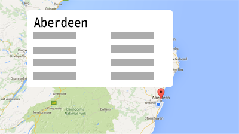
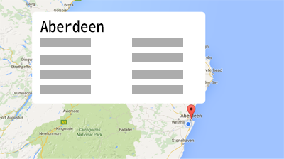

#trendingWhere?
Sign in using your twitter account and explore the trending topics
of cities around the world!

Sign in using your twitter account and explore the trending topics
of cities around the world!

- Pan across the map by clicking and dragging your mouse.
- Select your chosen city by clicking on the marker.
- The top 10 trending topics for that city will be displayed.
- Get started by signing in to twitter with the button below!